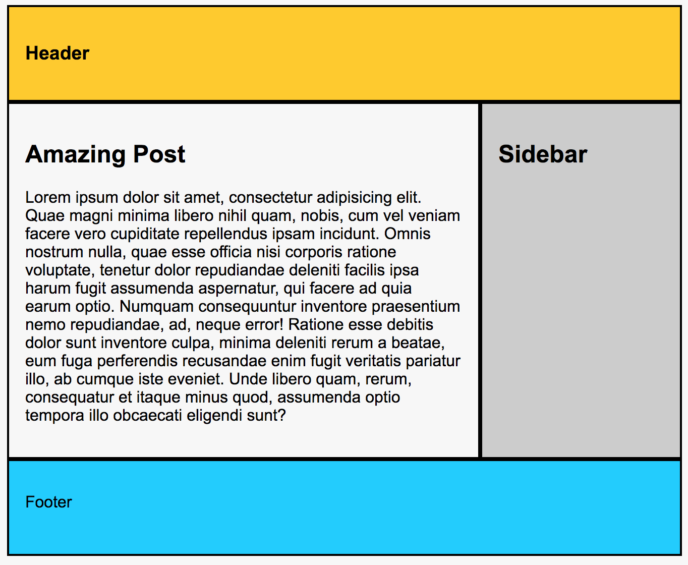
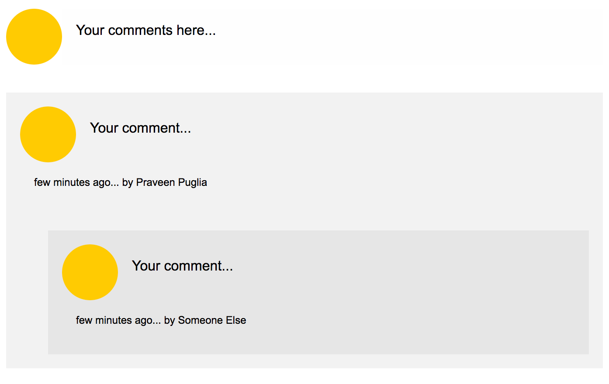
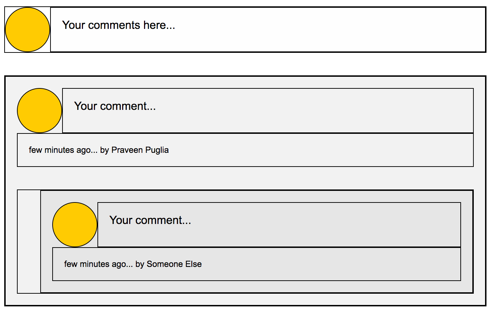
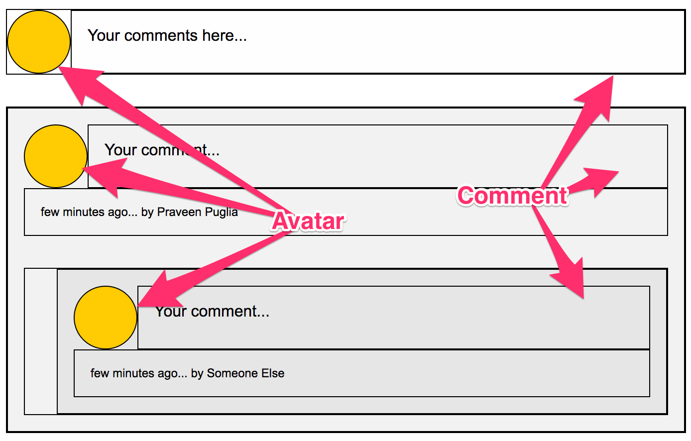

I have been playing around with CSS Grids for some time now and it has been an extremely delightful experience. So much so that I have submitted a talk proposal at MetaRefresh 2017. If it gets selected, it's gonna be my first time ever speaking at a conference. I am nervous. If you are gonna be at MetaRefresh and wanna know about Grids, go vote! 😊
Back to the topic...
Grid has areas. We can define the entire layout with area names and ASCII art. For example -
.container {
display: grid;
grid-template-areas:
"header header"
"main sidebar"
"footer footer";
}
/* Assign areas...*/
.page-header {
grid-area: header;
}
...This is going to generate a standard two column layout grid. Something like this... 
What's great about area names is that we can reuse them. Confusing? Let me give an example.
Say we are creating a comments section for a blog which has to look like this. 
And if we add a little bit of borders, we see how the grid should be constructed. 
It's clear that the avatar and the comment(input/text) is used exactly the same way in both the places. So, we should be able to create two grids, both of which can dedicate a place for avatar and the comment. Here's what I mean. 
Here's how that might look in code.
<!-- Comment Area -->
<div class="comment-input">
<div class="avatar"></div>
<div class="input">
<!-- in real world, there'll be a text area in here! -->
Your comments here...
</div>
</div>
<!-- Comment List -->
<ul class="comment-list">
<li class="comment-item">
<div class="avatar"></div>
<div class="comment">Your comment...</div>
<div class="meta">few minutes ago... by Praveen Puglia</div>
<!-- Nested Thread -->
<ul class="comment-list">
<li class="comment-item">
<div class="avatar"></div>
<div class="comment">Your comment...</div>
<div class="meta">few minutes ago... by Someone Else</div>
</li>
</ul>
<!-- Nested Thread Ends -->
</li>
</ul>... & relevant CSS.
.avatar {
grid-area: avatar;
height: 64px;
width: 64px;
}
/* Comment Input */
.comment-input {
display: grid;
grid-template-columns: 64px 1fr;
grid-template-areas: "avatar comment";
}
.input {
grid-area: comment;
}
/* Comment List */
.comment-list {
/* To make sure that nested threads take up the entire width of the grid. */
grid-column-end: span 2;
}
.comment-item {
display: grid;
grid-template-columns: 64px 1fr;
grid-template-areas:
"avatar comment"
"meta meta";
}
.comment {
grid-area: comment;
}
.meta {
grid-area: meta;
}Things to notice,
avatar and comment among the grids..avatar element in both the places..input & .comment which belong to the same area in both the grids but we still can style them individually.To me, grid, in this case and many more like it, is doing a great job at establishing relationships among elements used on page and making it easy to understand for humans.
Here's the final demo!
See the Pen A Generic Comments Section - Using CSS Grids by Praveen Puglia (@praveenpuglia) on CodePen.